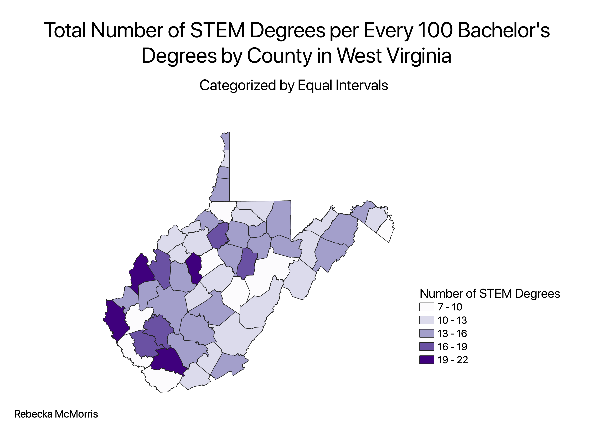

Homework 8: Ratio Choropleth with Different Categorization
Rebecka McMorris
The ratio I selected for this map was the number of STEM bachelor's degrees per every 100 total bachelor's degrees for each county in West Virginia. Since I'm a STEM major, I thought it would be interesting to look at the distribution of STEM degrees compared to all other degrees in the state where I was born. The degrees classified as STEM include all sciences, math, technology-related fields, and engineering.
Equal Interval Classification
An advantage to equal interval classification is that the intervals are all the same and aren't heavily leaning in one direction. It's easier to look at and comprehend than uneven intervals or those with great variation. A disadvantage to this classification style is that the proportion of data that falls under each interval can greatly vary. One interval might have a large proportion of the data, while another interval might have an extremely small amount.

Pretty Breaks Classification
The main advantage to the pretty breaks classification is that the intervals in the legend are very easy to understand. They are separated so that they are visually appealing and not too complicated. A major disadvantage to this classification style is that the data can be extremely distorted. The intervals are sorted in a way that is visually appealing, not practical, so one interval can have a large proportion of the data and the resulting choropleth would not have a good distribution of colors.
Natural Breaks Classification
An advantage to the natural breaks classification is that it identifies and categorizes the breaks already present in the data. The resulting choropleth accurately shows the trends in the data that are actually present, so it provides the most realistic picture of the data set. A disadvantage to this classification styles is that the interval ranges can have great variation. One interval set might have a very small range of values, while another has a very large range. This means the breakdown of intervals in the legend might not be the most visually appealing or comprehendable.
Data used for this project
CSV dataset
Link to geoJSON